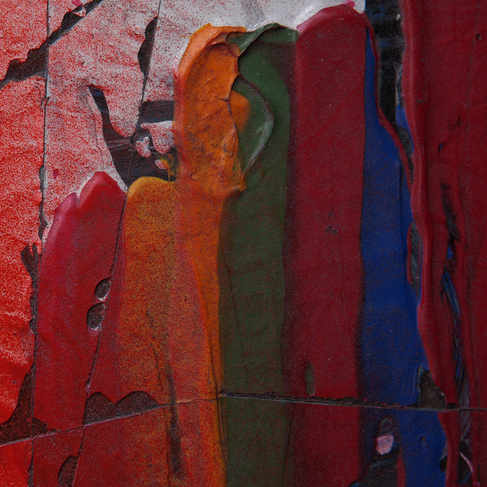
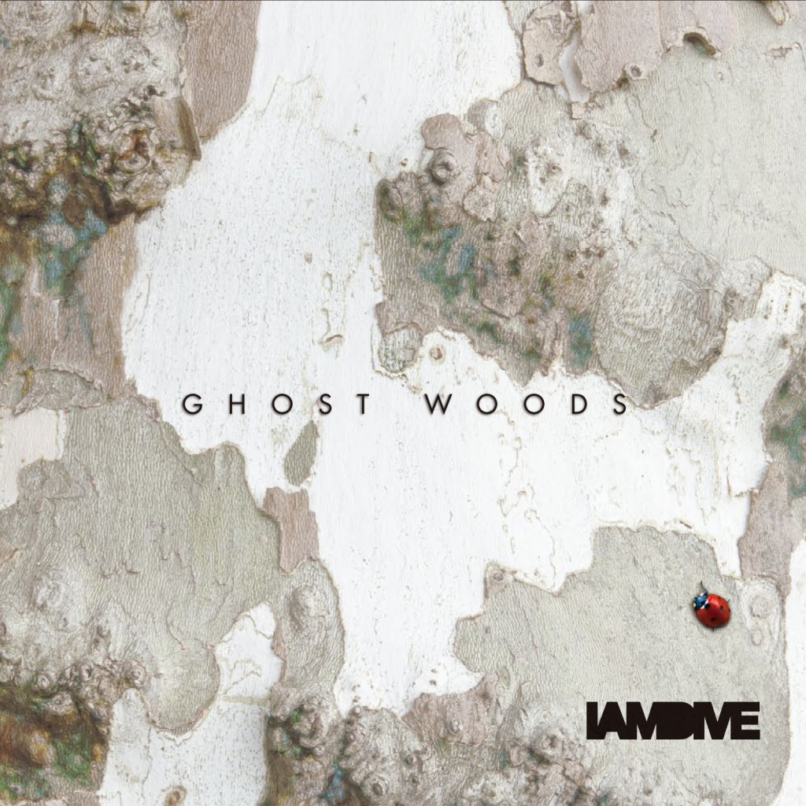
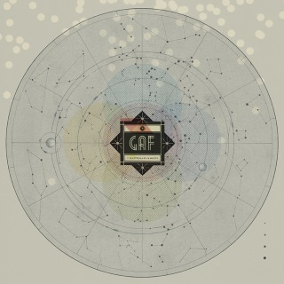
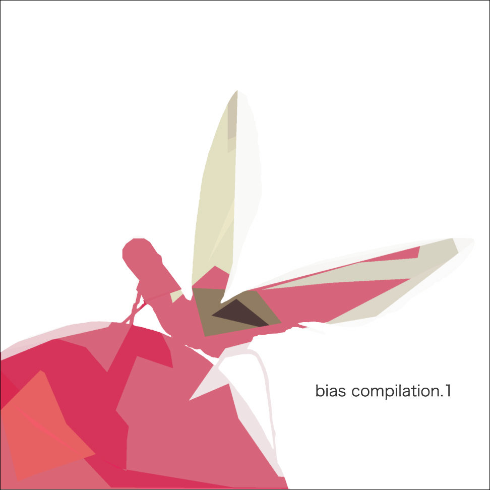

music label / sound design
bias
楽曲 作曲 制作承ります




ARTIST
Independent releases and sound works
biasは、リリース、制作、サウンドデザインを中心に活動する音楽レーベル/制作室です。
音源制作、作曲、イベントや映像に向けた音まわりの相談も受け付けています。
SHOP
Selected Releases
LAB
Chord Lab
CONTACT